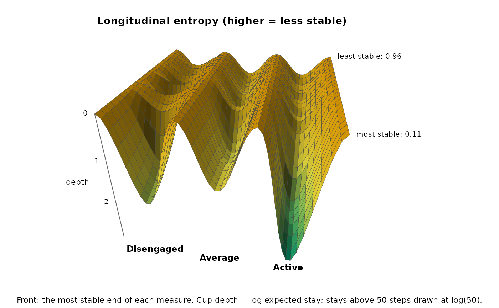

landscape_surface() traces the cups of stability_landscape() over a
second axis, a per-sequence stability measure from sequence_metrics()
such as self-loop tendency or longitudinal entropy, and returns the cup
depth of every state at each point of that axis. At each of n_grid
values of the measure, sequences are weighted by a tricube kernel on their
distance to that value over the k nearest (Cleveland 1979), and each
state's cup depth, \(-\log(1 - P_{ii})\) (the log of its expected
stay), is computed from their weighted pooled transitions. With the
default measure, longitudinal entropy, moving up the axis goes from the
most stable to the most volatile sequences; for a measure where higher
means more stable (self-loop tendency, spell durations, initial-state
persistence, dominant-state share) it goes the other way. Several
measures give one surface each, and a grouped network one set per group.
The measures are computed from the same sequences as the depths, so the
cups of the most stable sequences are deep by construction (self-loop
tendency in particular is closely tied to the stay probabilities). What
the surface adds is which cup deepens as stability rises. A slice's
effective_n (\((\sum w)^2 / \sum w^2\)) shows how many sequences it
rests on, and a warning of class nestimate_thin_slice flags slices
resting on fewer than five. For change over the programme rather than
across sequences, use landscape_trend().
Usage
landscape_surface(
x,
measure = "longitudinal_entropy",
states = NULL,
k = 30L,
n_grid = 25L,
cols = NULL
)
# S3 method for class 'net_landscape_surface'
summary(object, ends = TRUE, ...)
# S3 method for class 'net_landscape_surface'
print(x, digits = 2, ...)
# S3 method for class 'net_landscape_surface'
plot(x, max_stay = 50, theta = 10, phi = 30, ncol = NULL, ...)Arguments
- x
The network or sequences: a transition network from
build_network()with method"relative"or"frequency"(or a barecograph_networkof one), a grouped one (netobject_group), atnamodel, or a wide sequence data frame or matrix. A network must carry its sequences; a network of another method (for example"glasso") raises an error of classnestimate_not_markov. For theprint()andplot()methods: anet_landscape_surfaceobject.- measure
The per-sequence measures to trace, one surface each: one or more numeric columns of
sequence_metrics(). Default"longitudinal_entropy". A name that is not a numeric column, or a measure that is the same for every sequence, raises an error of classnestimate_bad_input.- states
Every state, each named once, in drawing order. Default
NULL, the alphabetical order. A vector that leaves out, adds or repeats a state raises an error of classnestimate_bad_input.- k
The number of nearest sequences each slice is weighted over, at least 5. Default
30, capped at the number of usable sequences.- n_grid
The number of slices, at least 2, spread evenly between the 5th and 95th percentile of the measure. If these percentiles coincide for a measure that is not constant, its full range is used. Default
25.- cols
For a wide data frame: the columns holding the positions. Needed when they are not a numbered run (
T1,T2, ...) or one of them is calledaction; such a frame withoutcolsraises an error of classnestimate_bad_input. DefaultNULL.- object
For the
summary()method: anet_landscape_surfaceobject.- ends
For the
summary()method:TRUE(default) compares the low and the high end of each measure;FALSEreturns every slice.- ...
Ignored.
- digits
For the
print()method: decimal places. Default2.- max_stay
For the
plot()method: the longest expected stay drawn, in steps, a number above 1. Cups of states whose expected stay is longer (including states never left in a slice) are drawn at the depthlog(max_stay), a display floor only. Default50.- theta, phi
For the
plot()method: the viewing angles passed tographics::persp(). Defaults10and30.- ncol
For the
plot()method: panels per row. DefaultNULL, one column per measure and one row per network.
Value
A net_landscape_surface object. print() shows each state's
depth at the low and the high end of each measure and the range of
effective sequences per slice; summary() returns the tables below;
plot() draws one graphics::persp() surface per network and measure
on a shared depth scale, the most stable end of each measure in front
(for a measure with no stability direction, the low end) and the
surface shaded from green (deep) to orange (shallow). print() and
plot() return their input invisibly.
summary() returns a data frame. With ends = TRUE: one row per
network, measure and state, with group, measure, state,
low_value, depth_at_low, high_value and depth_at_high. With
ends = FALSE: one row per network, measure, slice and state, with
group, measure, value, state, depth, dwell and
effective_n.
The object's fields:
- slices
Every slice, as
summary(x, ends = FALSE)returns it.- states
The states, in drawing order.
- measure, groups
The measures traced and the network names (
"network"for a single one).- k
The number of nearest sequences per slice.
Details
Network input replays the network's per-sequence weighting, concatenation and boundary markers; concatenated sequences are weighted as one unit. Scaled, thresholded or otherwise modified networks whose weights do not match their stored sequences are refused; pass the original sequences to estimate a new landscape.
Sequences with fewer than two observed positions, or no value of the
measure, are left out. The kernel's half-width is the distance to the
k-th nearest sequence, but at least 1/50 of the measure's range. A state
that does not occur in a slice has an NA depth and leaves a gap in the
surface, and one that is never left in a slice has an infinite depth.
Errors
nestimate_not_markov for a network that is not a transition network;
nestimate_bad_input for an unknown, non-numeric or constant measure,
bad states, input without sequences, or a network whose weights cannot
be rebuilt from its sequences (a scaled or thresholded one included);
nestimate_landscape_unestimable for fewer than five usable sequences.
Warning nestimate_thin_slice when slices rest on fewer than five
effective sequences.
References
Cleveland, W. S. (1979). Robust locally weighted regression and smoothing scatterplots. Journal of the American Statistical Association, 74, 829–836.
Kramers, H. A. (1940). Brownian motion in a field of force and the diffusion model of chemical reactions. Physica, 7, 284–304.
Examples
net <- build_network(trajectories, method = "relative")
surf <- landscape_surface(net, measure = "longitudinal_entropy",
states = c("Disengaged", "Average", "Active"))
surf
#> Landscape surface: 3 states, 1 network x 1 measure, 30 nearest sequences per slice
#>
#> Cup depth (log of the expected stay) at the low and the high end of each measure:
#> measure state low depth_at_low high depth_at_high
#> longitudinal_entropy Disengaged 0.11 1.95 0.96 0.57
#> longitudinal_entropy Average 0.11 1.42 0.96 0.57
#> longitudinal_entropy Active 0.11 3.03 0.96 0.54
#>
#> Effective sequences per slice: network 13.3-25.7
# \donttest{
plot(surf)

# }